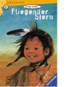

Fliegender Stern

Estrella Fugaz quiere ser uno de los mayores. ?Entonces podra montar a caballo y cazar bufalos! Pero hace dias que los cazadores vuelven con las manos vacias. La gente blanca los ha eSpaßtado y su pueblo pasara hambre si no logran dar con ellos. El chico decide ir en secreto donde habita la gente blanca. El les dira que deben irse de alli para que el bufalo vuelva y todo sea como antes. Shooting Star wants to be one of the greatest. Then she can ride a horse and hunt buffalo! But the hunters have been coming back empty-handed for days. A boy decides to secretly go out in search of a buffalo to keep his people from starving. ?